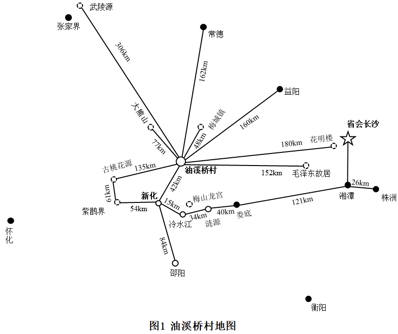
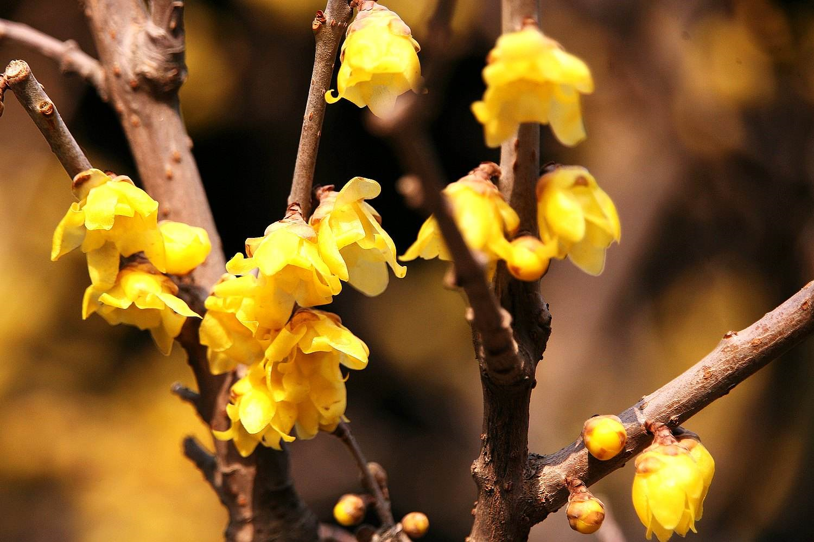
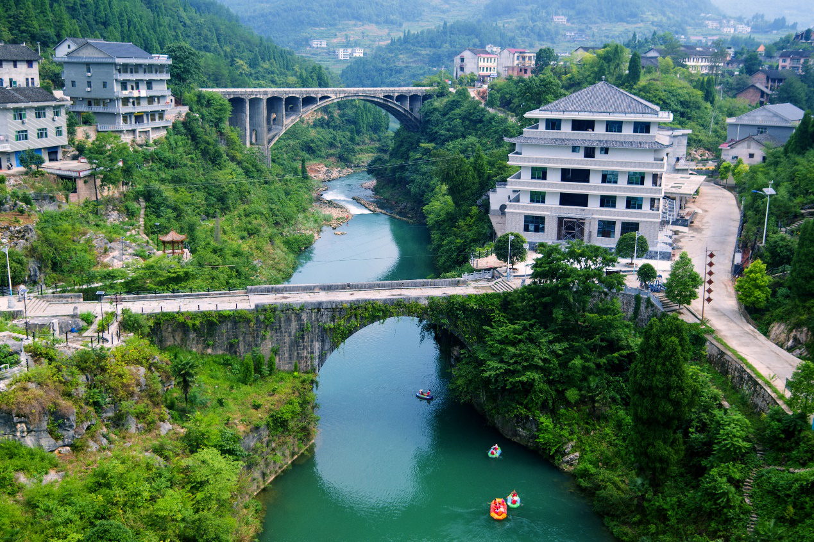

- 村徽
村花：腊梅
地理地形

历史渊源
气候
村徽由拱桥，溪流，花朵三个元素组成。拱桥即为油溪桥，是油溪桥村的地标建筑，桥洞呈拱形，可以减缓水流，使得这座两百多年的石拱桥经过多次洪水的冲击仍然屹立不倒。桥的修建过程也十分坎坷，充分体现了油溪桥村村民艰苦奋斗，无私奉献的精神。溪流蜿蜒曲折，险滩环生，可见此地的溪流峡谷风光实为一绝。古有“宝剑锋从磨砺出，梅花香自苦寒来”的佳句引人上进，此处村花蜡梅更是油溪桥村精神的化身，芳香质朴，坚韧不拔。村徽底色为绿色，象征着自然与和谐。
油溪桥村的蜡梅绽放于悬崖峭壁之上，水库周围是两片高耸的峡谷，一片蜡梅林挺拔地在湍急的山河之间生长、开花。油溪桥村来源于村内200多年历史的古桥—油溪桥，油溪桥的建造依赖于先辈为后辈的无私奉献。油溪河河水湍急，无钢筋水泥的条件下建设一座石头桥，历经百年风雨依旧俊朗，先辈所传承下来的坚忍不拔精神令后辈们铭记于心，传承下去。
蜡梅正是其傲雪绽放，不畏严寒，不惧干旱，不避湍流的精神与油溪桥村百年传承的精神相互辉映。峭壁上郁郁葱葱的蜡梅林，隆冬时阵阵清香的蜡梅，构成油溪桥村靓丽的风景线，景美，村美，人更美！
油溪桥村，位于湖南省新化县吉庆镇，国家级风景名胜区，位于新化县北部，与安化县接壤，距新化县城、安化梅城、梅山龙宫、大熊山等城镇景区均不足30公里。区域总面积8平方公里（原油溪桥村总面积为5平方公里，后与晨光村合并），耕地面积980亩，森林覆盖率为92.8%以人工林为主、主要树种是松树、柏树、杉树、还有少量的楠竹。境内有一条油溪河，全长57公里，分为上中下油溪河，上游起点为车田江水库，止于资江，油溪河漂流属于中油溪，已开发漂流里程8公里，属于国家级风景名胜区，30-80公里内的周边有梅山龙宫、大熊山森林公园、梅山大峡谷、厚皮岭李花牡丹基地，村内有江南小三峡、铜锣湾生态产业园、桃花基地、戴家拜荷花基地；100公里内外的省内景点紫鹊界、古桃花源、毛泽东故居、花明楼等有明景点。省道S217横穿过境，正在修建的龙塘高速距村不足8公里。距离新化县90分钟左右车程、距离省会长沙4个小时车程。去张家界、怀化300公里左右。
油溪石拱桥为江南峡谷第一古石桥，在当时是沟通邵阳，宝庆和安化交通要道。因地势险要，修了三次，垮了两次。始建于明朝崇祯元年（1638），至清朝崇德五年（1641）建成，历时13年。后被大水冲垮，又于庚午年（1870）冬月重建成此桥。
传说建桥时每日百人做工，却只九十九人吃饭，有一人是神仙相助，亲手技术先进出一块拱桥合龙用的尖石，纹丝不动，天衣无缝。神仙还将兴水作怪的神蛟赶走，召来千年成精的蜈蚣镇桥。
1982年12月，由新化县人民政府列为县级保护文物。为保护油溪河石拱桥这一历史文物，在古桥下约百米处又建一座新桥。于1998年12月竣工，系钢筋混泥土板肋拱桥，长109.62米，宽7.5米，人行道1米，单孔，净高78米，跨径72米，也是湘中地域最高的拱桥。新桥建成后，既减去了古桥的车辆负载压力，又为油溪河增添了新的景观。如今，这里双桥拱映，相得益彰，形胜山川更添特殊性。
油溪桥村傍油溪古桥而建，故名曰油溪桥村。
油溪桥村气候属亚热带季风气候，四季明显，年平均气温16.8℃。降水量1453.5毫米，日照时数1488小时，无霜期281天。